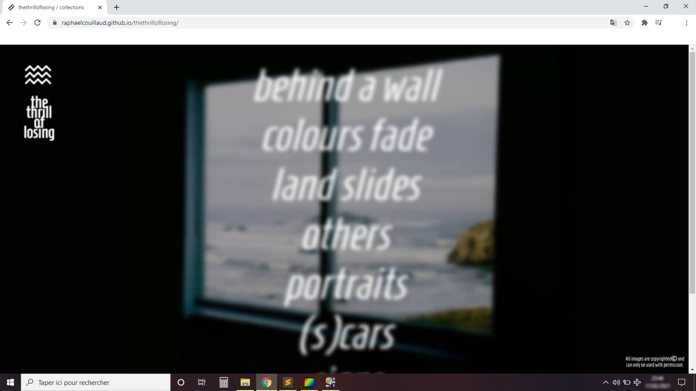

Mon pitch
Je suis Raphaël Couillaud et je suis développeur web...
Grâce à ma sensibilité particulière pour le graphisme, j'aime créer des univers en apportant une identité visuelle unique et soignée pour l'ensemble de mes projets.
Mon parcours
Un nouveau départ...
Mon voyage vers le développement web a commencé au printemps 2020 lorsque j'ai saisi la chance de pouvoir découvrir ce métier en intégrant le programme Job'Etudes Nouvelle Aquitaine. Cela m'a permis de me concentrer pleinement sur mon objectif de reconversion professionnelle en intégrant la formation délivrée par OpenClassrooms.
-
Diplôme d’Études Comptables et Financières
Lycée Aliénor d’Aquitaine - Poitiers
-
Agent admin. et financier - Bureau d’études
S.A.R.L. Odyssée Développement - La Rochelle
-
Licence Universitaire Professionnelle "Activités juridiques"
Faculté de Droit - La Rochelle
-
Comptable - Jeune Entreprise Innovante
S.A.S. Sedna - La Rochelle
-
Freelance - Développeur Web
HELLO FRIEND - La Rochelle
-
Diplôme Développeur Web (RNCP niveau 5)
OpenClassrooms
Mes mentors
A.K.A. La dream team...
L'√©quipe qui m'a accompagn√© dans ce p√©riple aux confins de l'int√©gration web et de l'apprentissage du JavaScript est compos√©e de professionnels chevronn√©s et aguerris qui ont su m'entourer et me guider vers l'infini et au-del√† ! üöÄ

Sabrina Carruezco
Experte WordPress/Divi
Freelance à Lyon depuis plus de 15 ans, elle aide les entreprises à développer leur visibilité sur le net en créant des sites internet performants et à leur image.

Kevin Si
Product Manager
3 ans en tant que développeur web et 2 années dans l'entrepreneuriat l'ont conduit à s'affirmer en tant que Product Manager.

Christophe Vallot
Formateur, Développeur Web Indépendant
Concepteur et développeur d'applications orientées Web (sites vitrine, corporate, e-commerce), gestionnaire de projet, formateur/tuteur en informatique.

Quentin Laurent
Développeur et CTO chez noeup'App
Fondateur d'une société de conseil, conception et développement d'applications logiciel et web.
Mon souhait
Mais je ne compte pas à rester là, mon envie de me spécialiser dans les technologies front-end ne peut résister à l'appel de la FORCE. Afin d'accompagner au mieux les artisans, les artistes, les entrepreneurs et les PME en participant à la conception de leur visibilité sur le web, je souhaite poursuivre ma progression.
C'est pourquoi
...
Je recherche un contrat
de professionnalisation
pour décrocher le titre
de développeur Front-End
Mes compétences
bla bla bla bla bla bla bla bla bla bla b :
PLAYER : RAPHAËL
HIGH SCORE : 9 999 PTS
Décrire les technologies à apprendre
üéûÔ∏è
the thrill of losing
Mission
üëâ Conception d‚Äôun portfolio num√©rique pour une artiste photographe
✔️ Intégration web d'éléments à partir d'un compte Instagram
✔️ Design 100% original
✔️ Site en anglais

Mission
üëâ Cr√©ation d'un r√©seau social d‚Äôentreprise
✔️ Authentifier un utilisateur et maintenir sa session
✔️ Gérer un stockage de données à l'aide de SQL
✔️ Personnaliser le contenu envoyé à un client web
Avis évaluateur
"Bonne sécurisation des données / Bonne communication frontend/backend / Belles interfaces utilisateur / Utilisation d'une librairie gérant la partie SQL."
-
Ibrahima Ciss, Engineer
Mission
üëâ Construction d'une API s√©curis√©e pour une application
✔️ Se conformer à la réglementation
✔️ Stocker des données de manière sécurisée
✔️ Mettre en œuvre des opérations CRUD de manière sécurisée
Avis évaluateur
"Excellent P6 réalisé qui répond à l'ensemble du cahier des charges du projet. Présentation orale, professionnelle et claire."
-
Joffrey Hernandez, Développeur fullstack
ü߆
Burnout : Parlons Reconstruction
Mission
üëâ Site vitrine pour une Psychologue du Travail
✔️ Intégration du contenu
✔️ Conception du design
✔️ Optimisation du référencement
✔️ Conseils hébergement & Maintenance
Technos
Google Search Console
Google Analytics
Avis client(e)
"Je vous remercie encore d'avoir accepté et pris le temps de réaliser ce site."
-
Aurélie Barribault, Psychologue du travail
Mission
üëâ Construction d'un site e-commerce
✔️ Valider des données issues de sources externes
✔️ Gérer des événements JS
✔️ Créer un plan de test pour une application
✔️ Interagir avec un web service avec JS
Avis évaluateur
"Projet structuré et bien argumenté. Respect du cahier des charges."
-
Wenceslas Baridon, Développeur Back-End
üé®
Portfolio Jack O'Keefe
Mission
üëâ Portfolio pour mes illustrations
✔️ Projet personnel
✔️ Conception technique et graphique
Avis client(e)
"Super boulot ! Un développeur vraiment au top ! Je le recommande évidemment."
-
Raphaël Couillaud, Développeur Web
Mission
üëâ Optimisation d'un site web existant
✔️ Analyse de l’état actuel de SEO du site fourni
✔️ Amélioration du SEO du site
✔️ Comparaison des résultats
✔️ Livraison d'un rapport d’optimisation
Technos
Lighthouse
GT Metrics
Google Search Console
Google Analytics
Avis évaluateur
"Le site est responsive, la sémantique HTML a été modifiée, les recommandations sont pertinentes, utilisation d'un support de présentation."
-
Hugo Dumont, Développeur
Mission
üëâ Mise en ≈ìuvre d'effets CSS graphiques avanc√©s
✔️ Intégration d'une maquette
✔️ Assurer la cohérence graphique d'un site web
✔️ Mettre en place une structure de navigation pour un site web
Avis évaluateur
"Les livrables sont conformes aux attentes. Le code est bien réalisé, bonne indentation, code valide au w3c."
-
Aurélien Antonio, Développeur Freelance
La bio graphique
bla bla bla bla bla bla bla bla bla bla b :
Respect des limites du cadre défini
CONTACTS
CV LINKEDIN GITHUB TWITTER MAIL